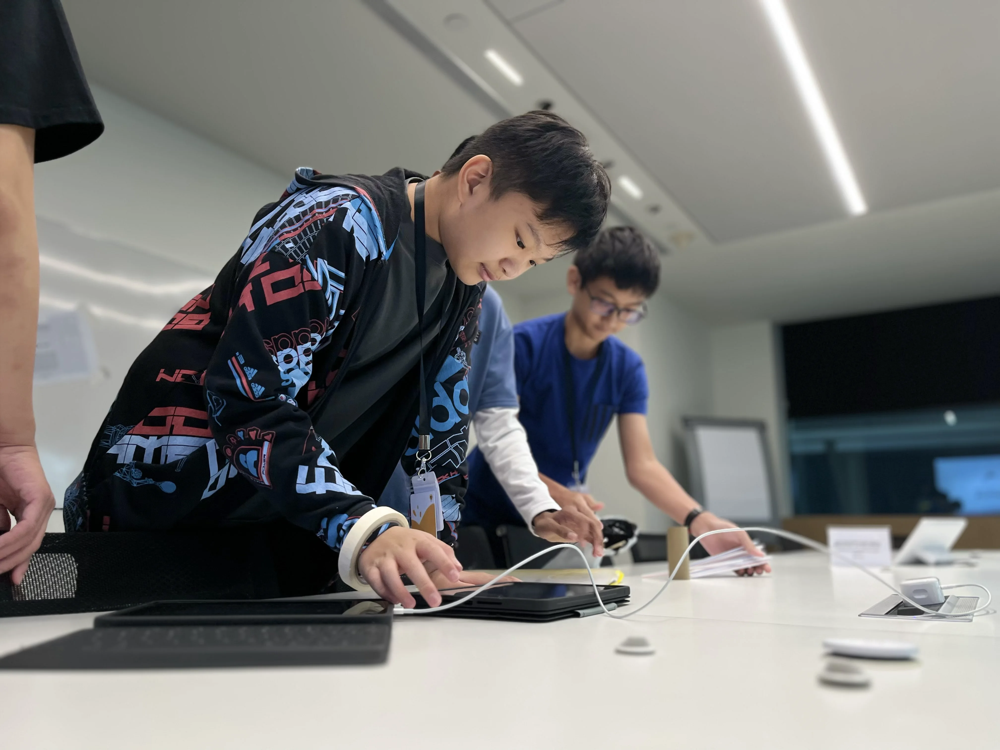
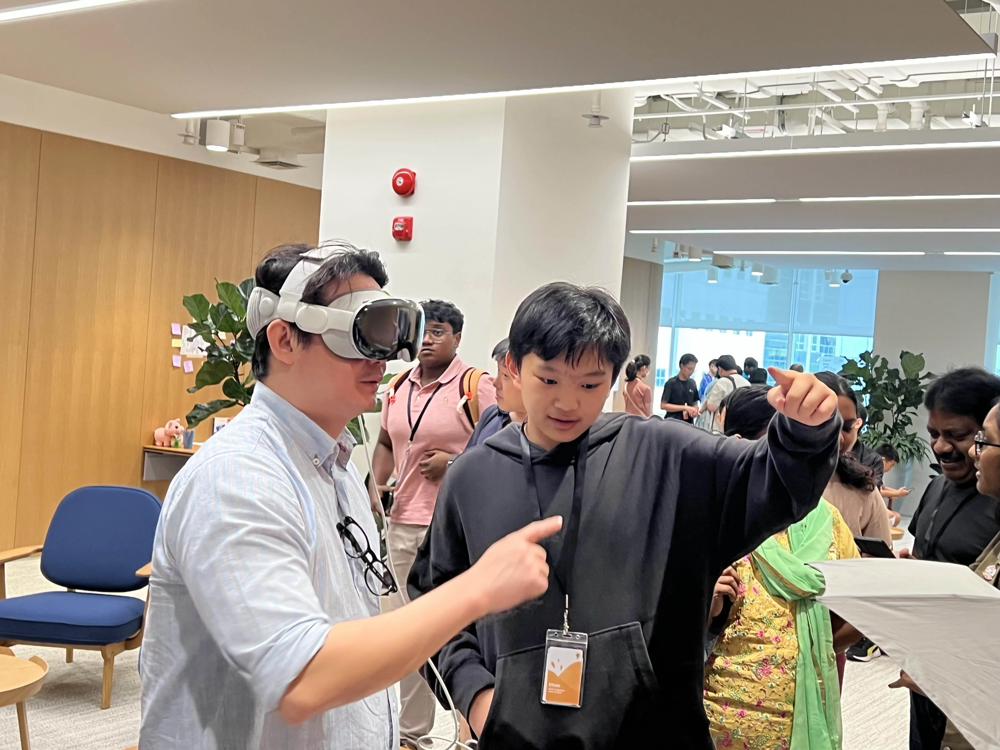
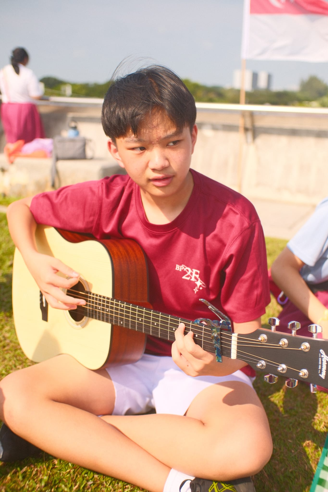

About me
A more thoughtful introduction.
I’m Ethan. I build software, take photos, play guitar, print things that sometimes fail seven times, and try to fit all of that around school.

It started with robots.
I first got into programming in primary school through robotics. At the time, coding was mostly a way to make a robot move and hopefully stop it from crashing into things.
It was only later, when I joined the Swift Accelerator Programme in secondary school, that programming really clicked for me. I realised that I had the freedom to make almost anything I wanted. Once I understood that, I started coding a lot more—not because I had to, but because I genuinely wanted to see whether my ideas could become real.

More than just Swift.
Swift Accelerator taught me a lot about building apps, but the most valuable parts had very little to do with code. I worked with all sorts of new people, and my friend group grew by a lot.
I learnt how to communicate ideas, work with different personalities, take responsibility, and lead when I needed to. I probably learnt as much from the people around me as I did from the programme itself.
I still help out with events there, and I’m currently a mentor. It feels slightly strange helping people in the same place where I started, but it’s also one of the most meaningful parts of the experience.
Knowing when to take the shot.
Concert photography taught me to stay aware of everything happening around me. A good moment might last less than a second, so you have to notice it and be ready.
It also taught me when to put the camera down. Getting a good photo is satisfying, but enjoying the moment itself is often more important than documenting it. I’m still learning how to balance both.


I only wanted to learn a few chords.
I first picked up guitar because I wanted to play church songs with a few basic chords. That was supposed to be enough.
Over time, I started noticing how many possibilities there were in music. I wanted to understand why certain chords worked together, why some progressions felt completely different from others, and how songs were actually put together. That curiosity pushed me beyond memorising chord shapes and into learning more about music theory.
I’m still learning, but that is probably the part I enjoy most.

Making things physical.
Robotics started in primary school, but I never completely left it behind. I still experiment with Arduino and Raspberry Pi projects, except now I also have a 3D printer.
Recently, I tried printing a case for my AirPods. For some reason, the print refused to stick to the bed. I changed the settings, cleaned the bed, restarted the print, and repeated that process at least seven times before getting one that worked.
It was incredibly annoying, but finally holding the successful print made it worth it. Mostly.
School first. Then I go all in.
I don’t really balance school and coding at the same time. During exam periods, I temporarily stop most of my projects and focus on studying. Once exams are over, I go all in again.
It means some projects sit untouched for a while, but I would rather pause them properly than do everything badly at once. The ideas are usually still waiting for me when I come back.